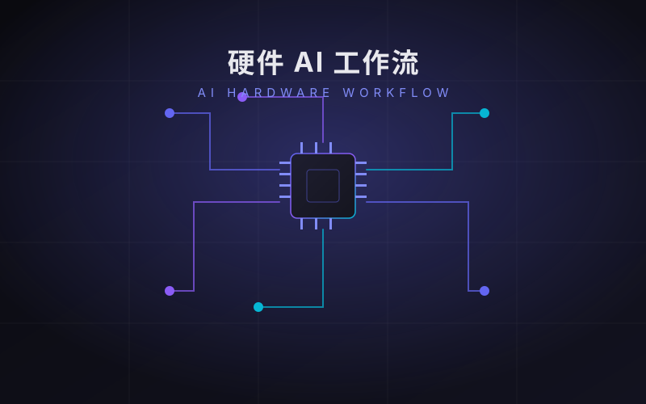
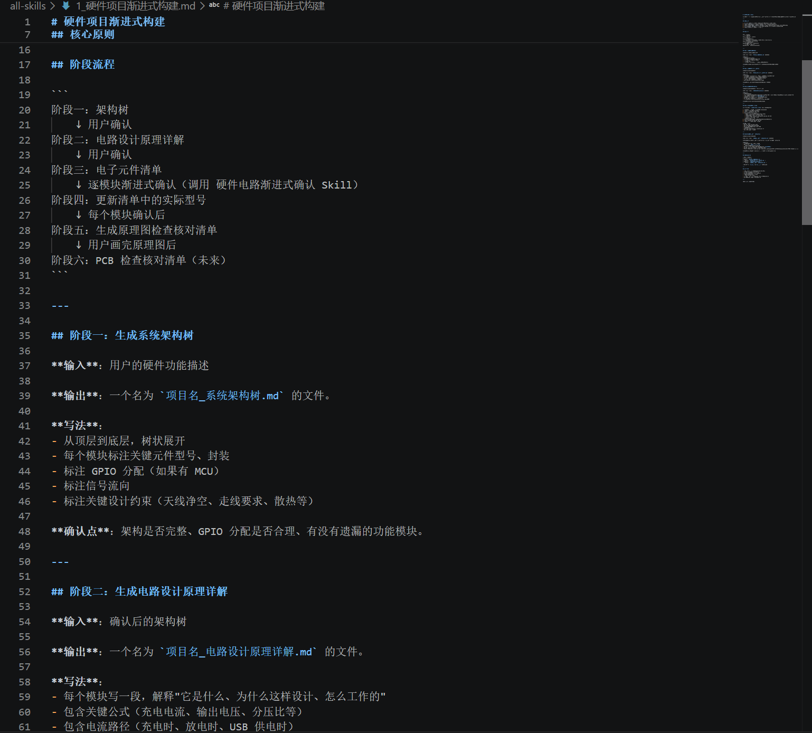

硬件 AI 工作流
这是我为自己设计的一套 Claude Code Skill。它把硬件设计的每一步拆解成「可确认、可回溯、有依据」的流程，让 AI 不再「看起来头头是道，实际可能悄悄出错」，而是成为一个严谨、可控的硬件设计搭档。

🎯 为什么做这个 Skill · Why
硬件设计的容错率极低——一个引脚接错，整块板子就报废。而让 AI 直接输出设计，最大的隐患是：它「看起来头头是道」，却可能在某个引脚、某个型号上悄悄出错，且很难被发现。这套 Skill 的核心思路，是把「人」重新放回决策中心——AI 负责把每一步的依据、参数、检查点摆清楚，而每一步的最终决定，都由我自己来拍板。
✨ 这套 Skill 的核心优点 · Strengths
每个阶段完成都停下来等我确认，AI 不主动跳步、不替我做决定。设计进度始终牢牢掌握在自己手里，而不是任由 AI 一路跑到底。
每个元件给「推荐型号 + 搜索关键词 + 必须满足的参数」，而不是甩一个唯一答案。换不换、换成什么，决定权永远在我自己。
接线用「元件型号名 + 数据手册引脚名」，不用容易混淆的位号；所有引脚编号必须有数据手册依据，明确禁止编造数据。
架构树 → 原理详解 → 元件清单 → 逐模块确认 → 检查清单，覆盖从想法到原理图的完整链路，每个环节环环相扣，没有遗漏。
每个阶段输出结构化的文档，换一个项目依然套用同一套流程；出了问题，也能回溯定位到具体的环节，而不是从头再猜一遍。
🧩 组成一 · 硬件项目渐进式构建
负责把「一个想法」推进到「一张原理图」。它的六阶段流程，就是上面所说「一步一确认」的落地实现——每一步都产出可检查的中间结果，确认无误后才进入下一步。
🗺️ 六阶段流程 · Pipeline
① 系统架构树 —— 从顶层到底层树状展开，标注关键元件、GPIO 分配、信号流向与设计约束
② 电路设计原理详解 —— 每个模块讲清「是什么、为什么、怎么工作」，含关键公式与电流路径
③ 电子元件清单 —— 按模块分组，每项给推荐型号 + 搜索关键词 + 必须满足的参数
④ 逐模块渐进式确认 —— 一个模块确认完、给完接线说明，才进入下一个
⑤ 原理图检查核对清单 —— 逐项列出检查点，覆盖电阻值、二极管方向、分压比等常见错误
⑥ PCB 检查清单 —— 布线规则与核对项（持续迭代中）

🔌 组成二 · 硬件电路渐进式确认
在元件清单确定后，负责「确认一个、连接一个」，直到原理图完成。它把抽象的电路连接关系，用引脚功能名和 ASCII 接线图一步步落地，让每个连接都能追溯到数据手册依据。
📋 严谨体现在细节 · Details
元件清单写「必须满足的参数」 —— 如果换型号，哪些指标不能妥协。例如：
电阻 100kΩ 0603 ±1% —— 必须 1% 精度，不能降为 5%
SS34 肖特基 —— 必须 Vf<0.5V@1A、VR≥40V，是肖特基而非普通整流管
DW01-A 保护芯片 —— 必须确认引脚排列，不同尾缀排列可能不同
PCB 布线规则 —— 走线宽度按 IPC-2221 按电流计算；退耦电容紧贴 IC；明确区分噪声源与敏感目标；危险引脚（如 ESP32-S3 的 GPIO45）禁止引出。